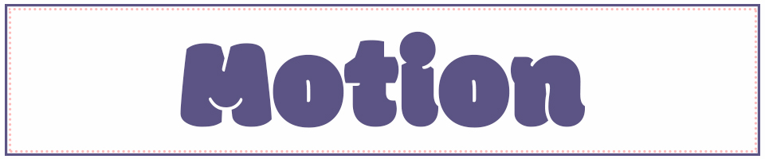

Home | Pixels | Vector | Motion | Print | Contact
With this project, I wanted to do something silly.
Sticking with my theme from the Vector project – music and cats – I added funky music playing through an old school boombox.
I created a flow of musical notes flowing upward in a way that the video could be played on a continuous loop, change unnoticed.